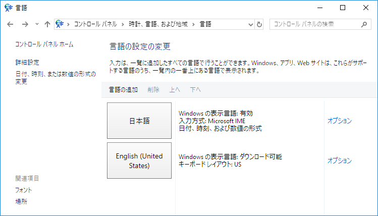

Happy Hacking Keyboardの設定
Posted on 2018年02月11日 (日) in Misc
Happy Hacking Keyboard Professional2 Type-S英語配列モデルを購入しました．より快適に使うための設定をまとめておきます．
以下の記事を参考にしました．
0.1 背面スイッチ
以下の設定にしています．
- Lite拡張モード（PC）: SW1 ON, SW2 OFF
- 左◇ ⇒ Fn: SW4 ON
0.2 レジスタの設定
- LayerDriver JPN: kbdax2.dll
- OverrideKeyboardIdentifier: AX_105KEY
- OverriedKeyboardSubtype: 2

0.3 言語の追加
「英語(米国)」を追加しました．

0.4 設定状況
以上の設定で以下のような動作になります．
- 左◇キー ⇒ Fnキー
- 右◇キー ⇒ Windowsキー
- 右Altキー ⇒［全角／半角］キー
- ノートPCのキー配列は日本語のまま